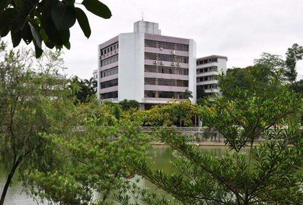

校园环境

编辑
据2014年6月学校官网显示，学院分设广州校区和
肇庆
校区。两校区共占地面积1000亩，建筑面积31万平方米。广州校区坐落在广州市天河区龙眼洞，毗邻华南植物园和龙眼洞森林公园；肇庆校区位于风景秀丽的七星湖畔。 [5]
广东金融学院肇庆校区
广东金融学院肇庆校区，座落在肇庆市的七星岩星湖旅游区，依山傍水，环山而建。校园内绿树成荫，繁花似锦，四季飘香；校舍红墙绿瓦，楼台亭阁，错落有致。
广东金融学院跑道
截至2012年5月，校区占地面积近100亩，建有学生宿舍楼、教学楼、办公楼、电化教学楼、干训大楼、饭堂、图书馆等，有计算机房四个，计算机近480台以及闭路电视教学系统、校园网、多媒体课室等现代化教学设施。建筑面积达49000多平方米。另还建有高标准自动循环游泳池、溜冰场、篮球场等运动场地。 [29]
 广东金融学院跑道
广东金融学院跑道